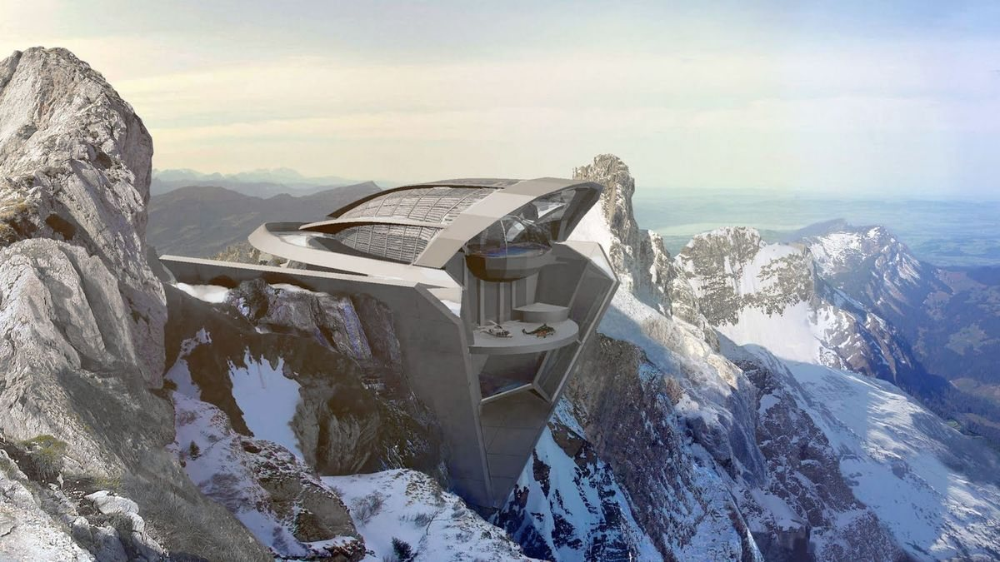

"Out of avidity to see the Immortals, to touch that more-than-human City, I could hardly sleep. And as though the Troglodytes could divine my goal, they did not sleep either."
— The Aleph



A world of your own to forge.
What will it become?
Space sensing your body,
Space healing your body,
Soulful living,
"Out of avidity to see the Immortals, to touch that more-than-human City, I could hardly sleep. And as though the Troglodytes could divine my goal, they did not sleep either."
— The Aleph